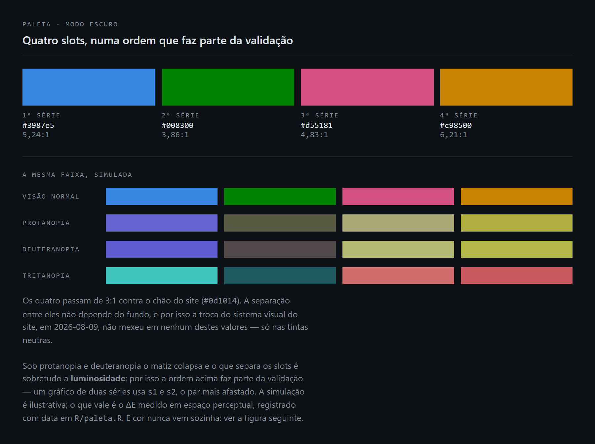
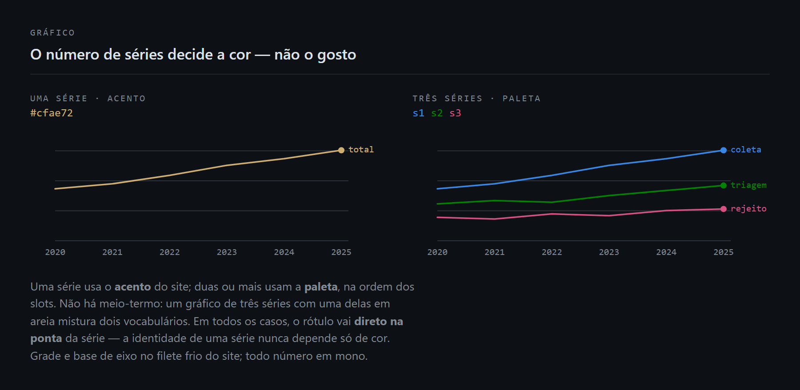
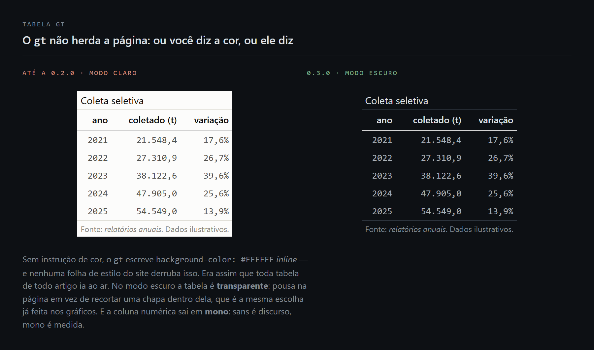

Identidade visual compartilhada dos projetos de dados abertos publicados em theoalbuquerque.com.br.
📘 Documentação completa: https://theoadepaula.github.io/theoviz/
Existe por um motivo específico: as mesmas cores, o mesmo estilo de tabela e a mesma formatação numérica estavam copiados em três projetos, sob três nomes diferentes. Eram idênticos byte a byte — o que só se descobriu ao compará-los, em 2026-07-19. Três cópias divergem; um pacote, não.
# instalar
pak::pak("theoadepaula/theoviz")
# ou
remotes::install_github("theoadepaula/theoviz")O chão mudou (0.3.0)
Em 2026-08-09 o site trocou de direção visual. Saiu “A Sala de Leitura Noturna” — fundo #0f172a, acento azul, Inter, cantos arredondados, sombra no hover. Entrou “O Boletim Técnico”: fundo quase preto, um único acento areia, duas vozes tipográficas (IBM Plex Sans e Mono), raio zero, sombra zero.
O pacote seguia calibrado para o sistema aposentado. Não era uma questão de gosto — eram três defeitos concretos, e o pior deles ia ao ar em toda página:
🔴 A tabela branca. tabela_gt() não dizia uma cor sequer. Sem instrução, o gt crava background-color: #FFFFFF inline, e nenhuma folha de estilo do site derruba estilo inline. Toda tabela de todo artigo ia ao ar como um retângulo branco no meio da página escura.
🟠 As tintas neutras eram cinzas quentes (#898781, #2c2c2a), herdadas do sistema anterior. O Boletim é frio (#7d858e, #2c333c). Cinza quente sobre página fria não lê como neutro discreto — lê como figura recortada de outro documento.
🟠 Os projetos inventavam o cinza que faltava. O relatorios-slu chegou a cravar TINTA_2 <- "#8a8a85" com o comentário “não é o tinta('fraca') do theoviz”. Era exatamente o sintoma que este pacote existe para eliminar.
O que não mudou, e isso é a boa notícia: as quatro cores de série. A separação entre elas não depende do fundo, e o contraste contra o chão só melhorou — #0d1014 é mais escuro que o #1a1a19 de antes. Nenhum projeto precisa mexer numa linha por causa disso.
As decisões, em três figuras
A paleta, e o que ela sobrevive

Os quatro passam de 3:1 contra #0d1014. Sob protanopia e deuteranopia o matiz colapsa e o que separa os slots é sobretudo a luminosidade — por isso a ordem faz parte da validação: um gráfico de duas séries usa s1 e s2, o par mais afastado. A simulação é ilustrativa; o que vale é o ΔE medido em espaço perceptual, registrado com data em R/paleta.R.
O número de séries decide a cor

Uma série usa o acento do site — acento(). Duas ou mais usam paleta(), na ordem dos slots. Não há meio-termo: um gráfico de três séries com uma delas em areia mistura dois vocabulários e quebra os dois. O areia não entra na paleta categórica porque não foi validado para daltonismo contra os quatro slots.
Em todos os casos o rótulo vai direto na ponta. A identidade de uma série nunca depende só de cor.
A caixa branca, e o fim dela

À esquerda, o que ia ao ar. À direita, tabela_gt(..., modo = "escuro"): fundo transparente, tintas do site, e a coluna numérica em mono.
As figuras são geradas por
data-raw/figuras.Ra partir dos valores reais do pacote — os hexadecimais e os contrastes que aparecem nelas são calculados na hora, não digitados. Se uma cor mudar e as figuras não forem regeneradas, elas passam a mentir; o script existe para que regenerar custe um comando.
O que tem dentro
O sistema visual do site — site(), acento()
Os tokens da direção “Boletim Técnico”, espelhados do bloco @theme de src/styles/global.css.
site("noite") #> "#0d1014" -- o chão da página
site("filete") #> "#2c333c" -- grade e base de eixo
acento() #> "#cfae72" -- o areia, único acento do sistemaSim, isto é uma cópia — e cópia é o que este pacote existe para eliminar. A diferença importa: agora há uma, datada, com a fonte escrita, e um teste que a confere contra o CSS do site quando o repo está na máquina. Antes havia três, e cada projeto inventava o seu próprio cinza.
O que não entra: tipografia, espaçamento e as regras de forma. Isso é do CSS do site e não tem uso do lado do R. O que o pacote consome são as cores.
O acento passa nos dois sentidos — 9,03:1 como texto sobre o fundo e os mesmos 9,03:1 como superfície, porque contraste é simétrico. Isso é propriedade deste valor, não licença geral: um acento que passa como texto não passa automaticamente como fundo.
Paleta — paleta(), tinta(), grade_rgba()
Quatro cores de série, validadas para daltonismo (protanopia, deuteranopia, tritanopia).
paleta()
#> s1 s2 s3 s4
#> "#2a78d6" "#008300" "#e87ba4" "#eda100"
paleta(modo = "escuro")
#> s1 s2 s3 s4
#> "#3987e5" "#008300" "#d55181" "#c98500"O modo escuro não é um clareamento automático do claro: são passos próprios, validados contra a superfície escura. O verde é o único slot igual nos dois modos.
⚠️ A ordem dos slots faz parte da validação. Usar
s1es3em duas séries é seguro; trocars2por uma cor “parecida” não é. Há teste travando os valores exatos — mudá-los exige mudar o teste também, para que a troca seja deliberada e revalidada.
Medições de 2026-07-19 (ΔE) e 2026-08-13 (contraste, recalculado contra o chão novo):
| pior par adjacente | contraste vs superfície | |
|---|---|---|
claro (#fcfcfb) |
ΔE 16,3 (deutan) |
s3 2,62 e s4 2,11 — abaixo de 3:1
|
escuro (#0d1014) |
ΔE 13,0 (deutan) | 5,24 / 3,86 / 4,83 / 6,21 — os quatro acima de 3:1 |
No escuro a paleta é mais segura em contraste que no claro. A regra do rótulo direto nasce do modo claro e vale nos dois, por consistência.
⚠️ Limite do modo escuro: considerando todos os pares, e não só os adjacentes,
s2(verde) ×s4(âmbar) cai para ΔE 6,9 em protanopia — dentro da faixa 6–8, que só é legal com codificação secundária. Um gráfico escuro que use somente esses dois precisa de rótulo direto ou textura. Usando os slots na ordem, o problema não aparece.
tinta() traz os neutros — texto, grade, eixo, fundo — separados das cores de série porque nunca codificam dado, só estrutura. No modo escuro elas agora são os tokens do site, não valores próprios:
tinta(modo = "escuro")
#> forte media fraca grade eixo fundo
#> "#dde1e6" "#a9b0b8" "#7d858e" "#2c333c" "#2c333c" "#0d1014"grade_rgba() devolve a grade com alfa. É o recurso de chão desconhecido — serve quando a figura não sabe sobre o que vai pousar. Sabendo, prefira a grade sólida: tinta("grade", modo = "escuro").
Tabelas — tabela_gt(), fmt_br(), fmt_pct_br()
Régua horizontal apenas, cabeçalho discreto alinhado à esquerda, nenhuma linha vertical. Coluna se separa por espaço, não por tinta.
dados |>
tabela_gt(titulo = "Atividades que somem da série histórica",
nota = "Fonte: *relatórios anuais*.",
modo = "escuro") |>
fmt_br(valor, decimais = 1)Escolha o modo pela página em que a tabela vai cair. O gt não herda a cor da página; ou você diz a cor, ou ele diz. "escuro" é o modo do que vai ao ar no site; "claro" (padrão) serve impressão, slide e PDF, e não é transparente de propósito — tinta escura sobre transparente seria ilegível justamente na página escura.
Coluna numérica sai em mono: sans é discurso, mono é medida. A fronteira é semântica, não estética.
Saída crua de tibble em <pre> não vai ao ar. E não reimplemente o layout no projeto — foi assim que os três divergiram antes.
Números — num_br(), pct_br(), mil()
Milhar com ponto, decimal com vírgula.
num_br(1234567) #> "1.234.567"
num_br(33.126, dec = 2) #> "33,13"
pct_br(33.126) #> "33,1%"
mil(137063) #> "137"Usa
formatC(), nãoformat(). Comformat()o vetor inteiro é alinhado a uma largura comum, e o número curto sai com espaço na frente — que aparece calado no meio de uma frase do artigo. Duas das três implementações antigas tinham esse defeito, contornado comtrim = TRUE.
Por que o padrão continua sendo o modo claro
Parece contraditório: o site é escuro por definição e nunca teve modo claro. Por que paleta() e tabela_gt() seguem devolvendo o claro sem argumento?
Porque virar o padrão restilizaria de uma vez todos os artigos que ainda não foram congelados, e deixaria o site com dois estilos ao mesmo tempo — os novos escuros, os antigos claros. Passar ao escuro é uma decisão de publicação de cada projeto, tomada junto com um re-render completo do site (ver abaixo), e não um efeito colateral de atualizar um pacote.
O que deliberadamente não tem
O tema ggplot. Parecia candidato óbvio, mas os dois projetos que usam ggplot divergem por motivos reais: o Cargos pinta uma superfície de fundo e mostra grade só no eixo Y; o Anuário não pinta fundo e mostra as duas grades. E o terceiro projeto usa plotly, para o qual um tema ggplot não serve de nada. Unificar exigiria parametrizar até o ponto em que o pacote não decide mais nada.
Cada projeto mantém seu tema_*() local, construído sobre paleta(), tinta() e agora site() — que é onde estava a duplicação de verdade.
Helpers de interatividade. girafe_cargos(), interativo() e grafico() codificam decisões de cada projeto (o que acende no hover, o que o tooltip mostra). Não são identidade visual; são desenho de interação.
Tipografia, espaçamento e forma. O site() traz só cor. Raio zero, sombra zero e a escala de espaçamento vivem no CSS do site, onde são aplicáveis.
Onde é usado
| Projeto | Arquivo de tema | Alias local |
|---|---|---|
cargos-executivo-federal |
artigos/_tema.R |
tabela() |
relatorios-slu |
code/tema_visual.R |
tabela() |
anuario-mineral-brasileiro |
code/tema.R |
tabela_amb() |
Os aliases existem para não mexer nos .qmd já escritos.
Os três chamam paleta() e tinta() no modo claro enquanto renderizam dentro de páginas escuras. Migrar cada um é decisão de publicação do projeto — ver a seção acima.
Cuidado: pacote e freeze divergem no tempo
O site renderiza os artigos com freeze, então um artigo já congelado não re-renderiza quando este pacote muda. Uma alteração de layout faria o site exibir dois estilos ao mesmo tempo.
A cura: a cada mudança que afete layout, subir a versão no DESCRIPTION e rodar uma vez, no repo do site:
⚠️ Não use
quarto render quarto --no-freeze. Essa opção não existe no Quarto 1.9 — ela é repassada ao pandoc, que respondeUnknown optione o render falha inteiro. Era o comando documentado aqui até 2026-08-15, e o erro só aparece quando alguém tenta usá-lo. Apagar o_freezeé o que invalida o cache;build:quartoainda encadeia a poda das fontes do ggiraph e o sync para o Astro, que umquarto rendercru deixaria de fora.
É o problema antigo com outro eixo. Antes, três cópias divergiam no espaço; agora, uma fonte só pode divergir no tempo.
Documentação
O site de referência é gerado por pkgdown e publicado a cada push na main:
https://theoadepaula.github.io/theoviz/
Offline, a mesma coisa:
?theoviz # visão geral: as famílias, a fronteira do pacote
?site # ajuda de cada função
vignette("theoviz") # o passo a passo, com o raciocínio por trás das decisõesDesenvolvimento
Ciclo completo, antes de abrir PR:
Rscript -e 'roxygen2::roxygenise(".")' # regenera man/ e NAMESPACE
R CMD build .
R CMD check theoviz_*.tar.gz --as-cran
Rscript -e 'pkgdown::build_site()' # opcional; o CI faz isso na mainRegenerar as figuras do README (precisa de Chrome e do repo do site por perto, pelas fontes IBM Plex):
man/,NAMESPACEedocs/são gerados — não edite à mão. A documentação vive nos blocos roxygen, junto do código que ela descreve. Odocs/nem é versionado: quem publica é o workflowpkgdown.yaml.
O R CMD check --as-cran passa sem ERROR. Restam:
- um NOTE de New submission, que só interessa a quem submete ao CRAN, e dentro dele um 404 em
https://theoadepaula.github.io/theoviz/— a URL só passa a existir depois que o workflowpkgdown.yamlroda pela primeira vez namaine o GitHub Pages é apontado para o branchgh-pages; - um WARNING de
qpdfausente, ferramenta da máquina e não defeito do pacote.
O CI roda o mesmo check em Ubuntu e Windows a cada push e PR.
Os testes travam os valores exatos da paleta, das tintas e dos tokens do site de propósito. Se um deles quebrar depois de uma mudança de cor, a pergunta certa não é “como faço o teste passar” — é “revalidei o contraste?”. Desde a 0.3.0 o contraste é recalculado a cada R CMD check (tests/testthat/helper-contraste.R) em vez de transcrito de um relatório, e há um teste que confere os tokens contra o global.css do site quando o repo está na máquina.